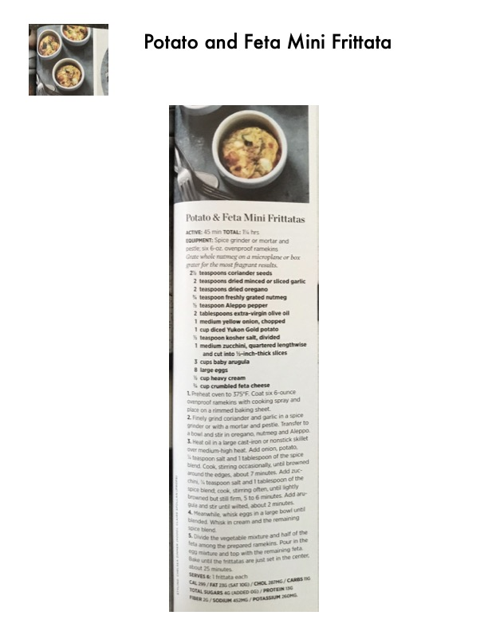

Potato & Feta Mini Frittatas

Original cookbook page 39
Individual frittatas made with potatoes, zucchini, arugula, and feta cheese, seasoned with a fragrant spice blend including coriander, nutmeg, and Aleppo pepper.
Prep: 45 minutes active • Cook: 30 minutes • Total: 1¼ hours
Ingredients
- 2½ teaspoons coriander seeds
- 2 teaspoons dried minced or sliced garlic
- 2 teaspoons dried oregano
- ½ teaspoon freshly grated nutmeg
- ½ teaspoon Aleppo pepper
- 2 tablespoons extra-virgin olive oil
- 1 medium yellow onion, chopped
- 1 cup diced Yukon Gold potato
- ½ teaspoon kosher salt, divided
- 1 medium zucchini, quartered lengthwise and cut into ¼-inch-thick slices
- 3 cups baby arugula
- 8 large eggs
- ¼ cup heavy cream
- ¼ cup crumbled feta cheese
Instructions
- Preheat oven to 375°F. Coat six 6-ounce ovenproof ramekins with cooking spray and place on a rimmed baking sheet.
- Finely grind coriander and garlic in a spice grinder or with a mortar and pestle. Transfer to a bowl and stir in oregano, nutmeg and Aleppo pepper.
- Heat oil in a large cast-iron or nonstick skillet over medium-high heat. Add onion, potato, ¼ teaspoon salt and 1 tablespoon of the spice blend. Cook, stirring occasionally, until browned around the edges, about 7 minutes.
- Add zucchini, ¼ teaspoon salt and 1 tablespoon of the spice blend; cook, stirring often, until lightly browned but still firm, 5 to 6 minutes. Add arugula and stir until wilted, about 2 minutes.
- Meanwhile, whisk eggs in a large bowl until blended. Whisk in cream and the remaining spice blend.
- Divide the vegetable mixture and half of the feta among the prepared ramekins. Pour in the egg mixture and top with the remaining feta. Bake until the frittatas are just set in the center, about 25 minutes.
Recipe #39 from collection